Alle Kanäle als Tickets
Kommentare, Direktnachrichten, Erwähnungen, WhatsApp-Nachrichten und E-Mails landen in einem Workspace.
ÖPNV/Verkehr
SocialHub CX bündelt Fahrgastanfragen aus Social Media, WhatsApp, E-Mail und Website-Chat als Tickets. Bei Störungen verteilt das Routing Anfragen nach Stichwort, Vorlagen und Co-Pilot helfen bei einheitlichen Antworten, und das Dashboard zeigt, ob das Ziel für die Erstantwort erreicht wird.
Kommentare, Direktnachrichten und WhatsApp-Nachrichten landen neben Ihren E-Mails im selben Workspace.

Kommentare, Direktnachrichten, Erwähnungen, WhatsApp-Nachrichten und E-Mails landen in einem Workspace.
Stichwortregeln je Postfach verteilen z. B. „Erstattung“ oder „Abo“ an das zuständige Team.
Abgestimmte Antworten per „/“ einfügen, mit Variablen wie Vorname und Ticketnummer.
Entwürfe auf Basis Ihrer Tarif- und Service-Artikel; gesendet wird von Ihrem Team.
Ziel für die Erstantwort in Geschäftsstunden; das Dashboard zeigt pünktlich vs. verspätet.
Das Social-Dashboard zeigt die Verteilung eingehender Nachrichten nach Kanal, Typ und Stimmung.
Kommentare, Direktnachrichten und WhatsApp-Nachrichten landen neben Ihren E-Mails im selben Workspace.
SocialHub auf OMR Reviews: 4,57 von 5 aus 374 Bewertungen, Stand 20.10.2026


FAQ
SocialHub CX bündelt bei Störungen alle Anfragen aus Social Media, WhatsApp, E-Mail und Website-Chat als Tickets in einem Workspace. Stichwortregeln verteilen sie an das zuständige Team, abgestimmte Vorlagen sorgen für einheitliche Antworten, und regelbasierte Ordner fassen gleichartige Anfragen zusammen, damit Ihr Team Spitzen strukturiert abarbeitet.
Ja, SocialHub CX ordnet E-Mail-Anfragen über Stichwortregeln je Postfach automatisch zu, etwa bei Begriffen wie „Deutschlandticket“, „Kündigung“ oder „Erstattung“. Danach gehen sie an ein Team, eine Person oder reihum an verfügbare Mitarbeitende. Optional verschlagwortet die KI neue Tickets, damit Sie Themen später im Dashboard auswerten.
Der Co-Pilot von SocialHub CX entwirft Antworten auf Basis der Help-Center-Artikel und Dateien, die Sie hinterlegen, und früherer Gespräche, etwa Tarifbestimmungen oder Erstattungsregeln. Er zeigt die Quellen, damit Ihr Team Aussagen prüft. Gesendet wird jede Antwort von einem Menschen; Live-Fahrplandaten bindet SocialHub CX nicht an.
SocialHub CX eignet sich für Ausschreibungen zu Social-Media- und E-Mail-Kundendialog, zum Beispiel für Fahrgastanfragen und Beschwerdemanagement. Für die Eignungsprüfung erhalten Sie die online verfügbare Leistungsbeschreibung, das ISO-27001-Zertifikat von SocialHub und weitere Unterlagen für Datenschutz-, Sicherheits- und Eignungsprüfung, abgestimmt auf Ihre Anfrage. Ausschreibungen mit anderem Kanalschwerpunkt deckt SocialHub CX nicht ab.
Q&A
Nein, SocialHub CX enthält keinen Chatbot, der Kundinnen und Kunden vorab befragt; Antworten schreibt und sendet immer Ihr Team. Der Co-Pilot hilft intern, indem er Rückfragen und Antwortentwürfe aus Ihren Wissensquellen vorbereitet. Für wiederkehrende Rückfragen, etwa nach Abonummer oder Linie, nutzt Ihr Team Vorlagen mit Variablen.
SocialHub CX unterstützt für den Fahrgastdialog alle Social-Media-Netzwerke, die SocialHub anbindet, WhatsApp, E-Mail und Website-Chat. Dazu gehören Kommentare, Direktnachrichten und Erwähnungen etwa auf Facebook, Instagram, X und TikTok sowie Bewertungen. Alle Anfragen werden zu Tickets in einem Workspace, unabhängig vom Kanal.
In der Demo zeigen wir typische Fälle aus dem ÖPNV – von der Störungsmeldung bis zur Erstattungsanfrage.
Warum verweisen Verkehrsunternehmen in Social Media auf E-Mail, und wie hängen beide Kanäle zusammen?
SocialHub CX bearbeitet Social Media und E-Mail im selben Workspace, sodass ein Verweis auf E-Mail keinen Bruch im Service bedeuten muss. Oft wechseln Anliegen mit persönlichen Daten, etwa Abo oder Erstattung, aus der öffentlichen Kommentarspalte in einen privaten Kanal. In SocialHub CX bearbeitet dasselbe Team beide Tickets mit denselben Vorlagen und Regeln.